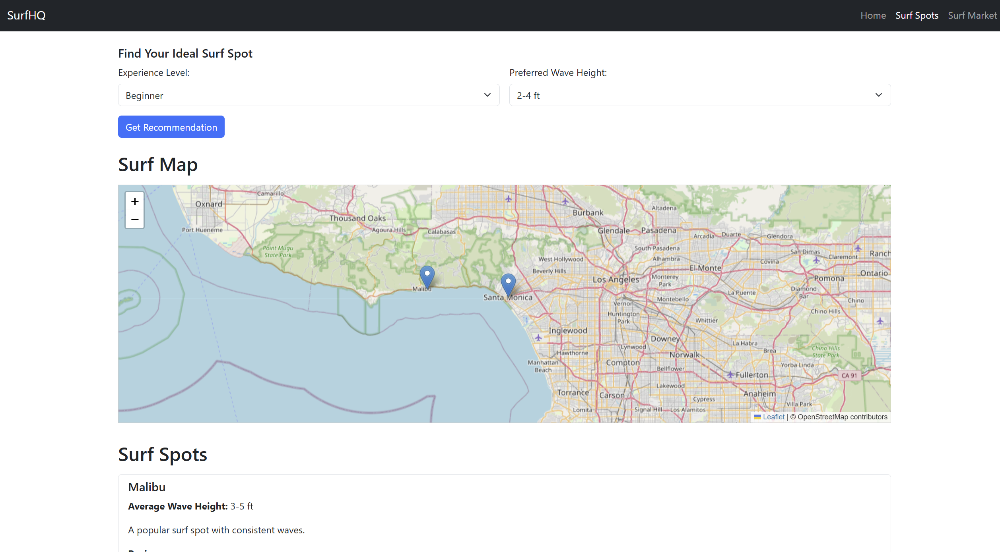
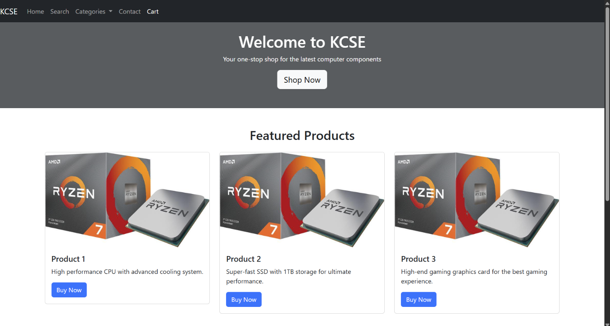
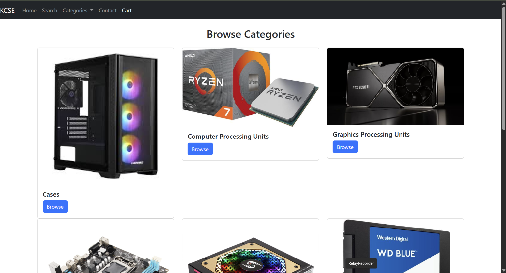
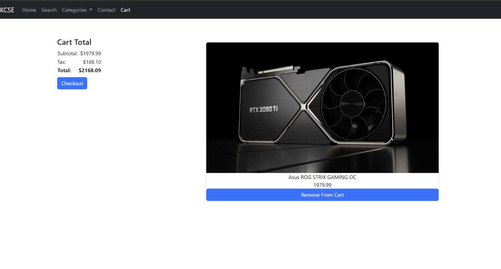
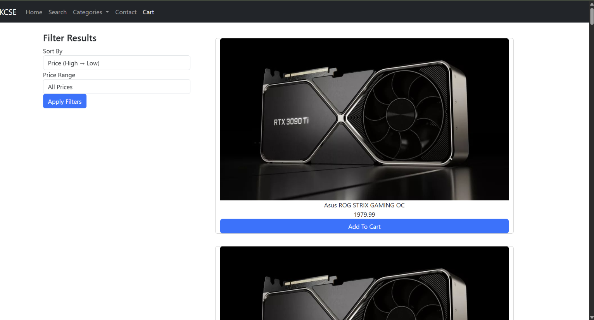
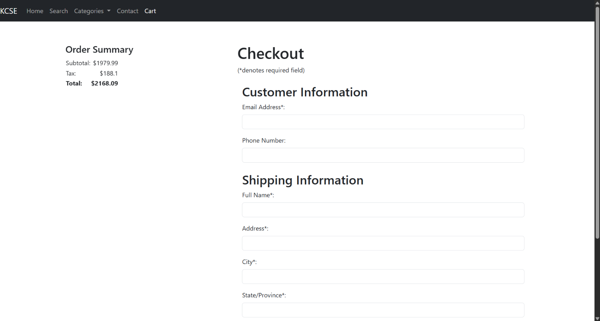
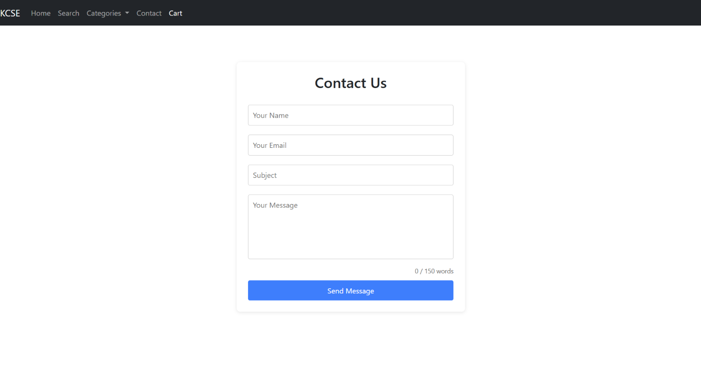
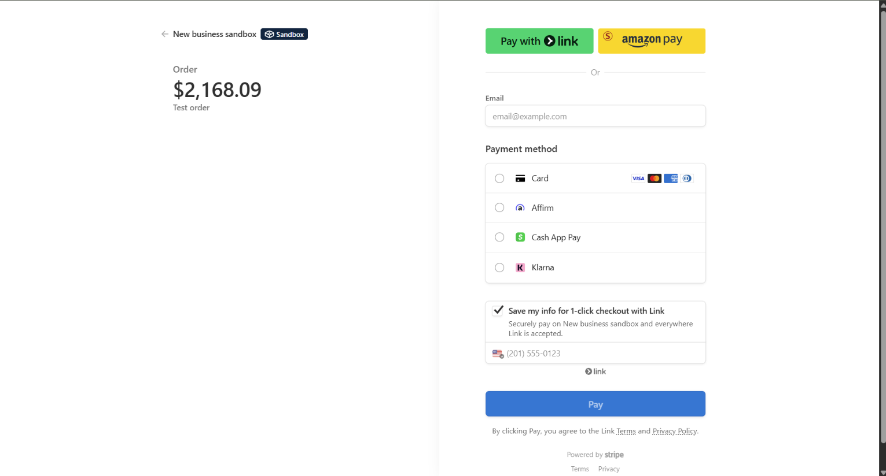
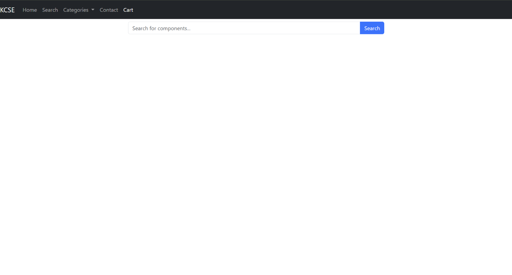

Work Experience
Machine Learning Engineer Intern
DS Systems
August 4th, 2025 - September 8th, 2025
Was the Development Lead of 7 interns to build an AI-powered fraud detection prototype for clients including Healthcare.
I trained, validated, and tested machine learning models using Python, Pandas, Scikit-learn, and XGBoost.
Developed a full stack dashboard using HTML, CSS, JavaScript, and Bootstrap for model result visualization and decision triage.
Built computer vision modules for document verification and simulated drone behavior for automated validation.
Demonstrated leadership, discipline, and initiative by coordinating tasks, managing deadlines, and maintaining consistent delivery quality.
AI Model Quality & Evaluation Fellow
ClearVerse AI
March 2026 - June 2026
Evaluated AI model quality and evidence reporting behavior to improve the reliability of reports shown to users, identifying alignment gaps in system outputs, evidence, and frontend/backend validation logic.
Reproduced and prototyped AI system issues, analyzed AI reasoning vs pattern matching, created edge case scenarios, and failure mode taxonomies that helped the company better understand product risks, reproduce AI reporting issues, and prioritize implementation fixes.
Led weekly company wide presentations to leadership, translating AI evaluation findings into engineering ready recommendations for regression testing, validation logic, UI truthfulness, reporting accuracy, and user trust.
Undergraduate Research Assistant - Compilers & Programming Languages
California State University, Northridge – with Professor Kyle Dewey
November 2025 - May 2026
Researching programming languages, compilers, automated testing, and software reliability under the supervision of Professor Kyle Dewey.
Working on building a small compiler and programming language, focusing on how design decisions affect testability and correctness.
Developing automated tests, including unit tests and property-based tests, to catch bugs and improve reliability of the language implementation.
Produce Team Member
Whole Foods Market
July 2022 - August 2023
Team Member for the produce section at Whole Foods Market. I opened the store at 6:00 am.
My responsibilities included: Preparing and Organizing Fruit and Vegetable displays and restocking multiple times per day.
I was in charge of offloading deliveries and preparing produce for juices and floral displays.
I was always on time, reliable, hard worker, and worked well with other team members.
I was respectful to my supervisor and the store manager and got along well with others.
Education
University of Southern California | Aug 2026 – May 2028
M.S. Computer Science, Artificial Intelligence
Coursework: Artificial Intelligence, Machine Learning, Deep Learning, Robotics, Natural Language Processing, Analysis of Algorithms, Web Technologies
California State University, Northridge | August 2023 - May 2026
B.S. in Computer Science
Coursework: Artificial Intelligence, Machine Learning, Data Mining, Web Engineering, Database Design, Software Engineering, Cybersecurity, Algorithm Design, Language Design and Compilers, Operating Systems, Advanced Data Structures, Automata, Programming Language Concepts, Calculus, Linear Algebra, Statistics and Probability.
Los Angeles Pierce College, August 2021 - June 2023
A.A. and Sciences Degree in Computer Science
I earned my general education degree. Classes towards my degree included: Intro to C++, Assembly and Architecture, and OOP.
Summary
Throughout my academic career, I’ve built a strong foundation in algorithms, data structures, and software design principles.
My coursework and projects have strengthened my problem-solving abilities and deepened my interest in artificial intelligence and data-driven software systems.
Projects
Smart Energy Management - Deep Reinforcement Learning HVAC Optimization
Built a custom OpenAI Gym HVAC simulation environment modeling indoor temperature, outdoor temperature, time of day, occupancy, and electricity price to study energy cost and comfort tradeoffs in commercial buildings.
Trained and evaluated a PPO controller using Stable-Baselines3 against a rule based baseline across fixed seed evaluation episodes, reducing simulated energy cost while analyzing comfort violations, reward stability, and deployment tradeoffs.
Technologies: Python, PyTorch, Stable-Baselines3, OpenAI Gym, TensorBoard
Smart Energy Management demo showing the reinforcement learning HVAC simulation and evaluation results.
Storm44 - AI Powered Study Tool
Developed an AI platform that converts YouTube videos, PDFs, and notes into flashcards, quizzes, and games to help students study more efficiently using a cloud-hosted RAG pipeline and PostgreSQL Integrated an AI tutor pipeline for personalized study assistance, supporting content ingestion, transformation, and interactive feedback
Technologies: Python, FastAPI, Sentence-Transformers, Cross-Encoder re-ranking, PostgreSQL, faster-whisper, yt-dlp, Vite, React / HTML / CSS, Bootstrap, REST APIs, PyMuPDF
Storm44 demo showing PDF/YouTube ingestion, AI generated study tools, and the AI tutor workflow.
Instacart Snack Department Analysis - Data Mining
Performed data mining and exploratory data analysis on the Instacart dataset with a focus on the Snack department.
Analyzed product popularity, aisle distributions, and customer ordering behavior using visualizations and association pattern mining techniques.
Technologies: Python, Pandas, Matplotlib, Seaborn, Data Mining Algorithms
SurfHQ - Surf Community Platform
It’s a website for surfers who want to know information about different beaches using an interactive map, surf feed with posts related to surfing, and a surf marketplace for people to sell and buy surf equipment.
It uses Java, JavaScript, CSS, HTML, and a SQL Database, Leaflet.js and uses Spring Boot and Bootstrap Frameworks.

Desktop Database Application - Rental Unit
Developing a desktop application with a graphical user interface to manage structured data using a relational database.
The application is a rental unit service application.
The application connects a JavaFX front-end to a MySQL database using JDBC for performing CRUD operations and managing relational data.
Technologies: Java, JavaFX, MySQL Server, MySQL Workbench, JDBC MySQL Connector
Database Rental Unit Application demo showing the user interface and core functionality.
E-Commerce Platform - Gaming Computer Parts
Created an online store that sells computer parts.
I worked on this project in a group and we used Java, JavaScript, CSS, HTML, and a SQL Database, Spring Boot and Bootstrap Frameworks, and Stripe for the payment system.








Personal Portfolio Website
Designed and developed this interactive online resume using HTML, CSS, and responsive web design principles. Hosted on GitHub Pages. Includes smooth navigation, a sticky header, and project image galleries built from scratch.
Technologies: HTML, CSS, GitHub Pages, Font Awesome
Skills
- Programming Languages: Python, Java, JavaScript, HTML, CSS, SQL, C++, C, C#, Scala, Swift
- Frameworks & Libraries: PyTorch, Stable-Baselines3, OpenAI Gym, Sentence-Transformers, RAGAS, FastAPI, Scikit-learn, XGBoost, Pandas, Spring Boot, Leaflet.js, Bootstrap, Matplotlib, Seaborn, Cross-Encoder re-ranking, JQuery, Joblib
- Tools & Platforms: Git, GitHub, Azure, Jira, PostgreSQL, TensorBoard, REST APIs, Node.js, Kaggle, Hugging Face, Live Server, Vite, Stripe, Docker, MySQL Workbench
- Machine Learning: Model Training, Validation, and Testing, Data Preprocessing, Computer Vision, Transcription, Chunking, Embedding, Fine Tuning, Data Visualization, Machine Learning Algorithms, Feature Engineering, Classification Models, Regression Models, Clustering Models, Machine Learning Pipelines, Project Management
- Software Development: Full Stack Development; Responsive Design; RESTful APIs, Project Management, Frameworks, Libraries, Flexbox, AI Integration, Databases
- Soft Skills: High Discipline, Great Communicator، Leadership، Team Collaboration، Problem Solving، Software Developer، AI/Machine Learning
Membership Organizations
- Alpha Epsilon Pi (AEPi) - Member since 2021
- Association for Computing Machinery (ACM) - Member since 2023
- CSUN IEEE - Member since 2024
- Game Development Club - Member since 2024
- Layer 8 (Cybersecurity Club) - Member since 2023
- Software Development Club - Member since 2023
- MataHacks Club - Member since 2024
- Society of Software Engineers - Member since 2025
Leadership Roles
- Development Lead at DS Systems - Led a team of 7 interns to build an AI-powered fraud detection prototype.
- Philanthropy Chair twice for Alpha Epsilon Pi (AEPi) - Organized two events that raised thousands of dollars each and led a committee
- Project Manager for SurfHQ - Coordinated tasks and managed deadlines for the development of the surf community platform.